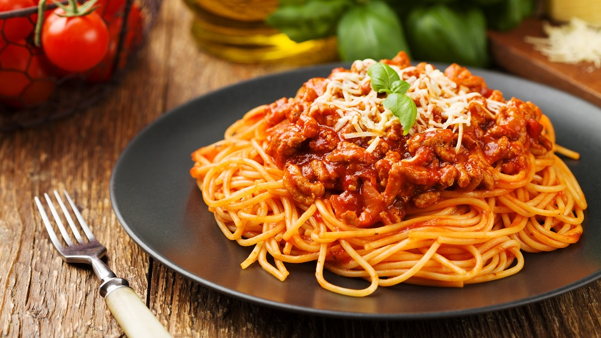

Number 1 Spaghetti Bolognese

Description
Das ist natürlich totaler Quatsch. Es gibt – wie von allen traditionellen Speisen – Millionen Varianten und wie üblich gibt es mehrere Quellen, die darauf bestehen, dass nur ihre Version die “echte” ist.
Tatsächlich gibt es einige Zutaten, die an jede Bolognese gehören; andere kann man anpassen, austauschen oder gar weglassen.
Ich kenne Bolognese zum Beispiel mit verschiedenem Fleisch, mal mit gemischtem Hack, mal – so, wie es etwas weiter nördlich gemacht wird – aus sehr grobem Schweinehack, also “Ragù”.
Für 8 Personen
Ingredients
- 1 kg gemischtes Hackfleisch
- Öl zum Anbraten
- 1 große Zwiebel
- 6 Stangen Sellerie
- 3 Möhren
- 200 ml kochendes Wasser
- 4-5 Lorbeerblätter
- 250 ml trockenen Rotwein
- Etwa 1,5 Liter Passata Rustica (2 Flaschen)
- Salz, frischer Pfeffer
Steps
- Als erstes alle Zutaten vorbereiten. Dazu die Zwiebel pellen und hacken und die Möhren schälen sowie fein würfeln. Jetzt den Sellerie von Blättern befreien, oben und unten abschneiden und gründlich waschen. Nun den Sellerie in feine Streifen schneiden und alles beiseite legen.
- Das Öl in einem großen Braten- oder Suppentopf erhitzen. Anschließend das Hackfleisch darin braun anbraten und anschließend auf einen Teller geben, bis man es wieder benötigt. Nun einen weiteren Schuss Öl in den Topf geben und das Gemüse und die Zwiebel darin kräftig anschmoren. Dann das kochende Wasser darüber gießen, mit Salz kräftig würzen, den Herd auf kleine Flamme stellen und das Gemüse abgedeckt etwa 15 Minuten köcheln lassen.
- Den Deckel abnehmen und die Flamme wieder hoch drehen. Nun das Hack zum Gemüse geben, salzen ordentlich aufkochen lassen und den Rotwein hinzugeben. Jetzt alles etwa 2 Minuten kräftig kochen lassen, dann die Passata und sowie Lorbeer hinzugeben. Abschließend alles offen bei kleiner bis mittlerer Hitze 2 Stunden kochen lassen.
Wer die Bolognese perfekt will, lässt sie nun zugedeckt über Nacht stehen und köchelt sie am nächsten Tag Hitze im geschlossenen Topf bei kleiner Hitze eine weitere Stunde.
Die Pasta, die man dazu reichen möchte, al dente kochen. Vor dem Weiterverwenden oder Servieren den Lorbeer entfernen. Achtung: Gerichte mit Fleisch werden in Italien traditionell OHNE Käse gereicht. Parmesan ist also tabu – zumindest theoretisch.
Return to main page